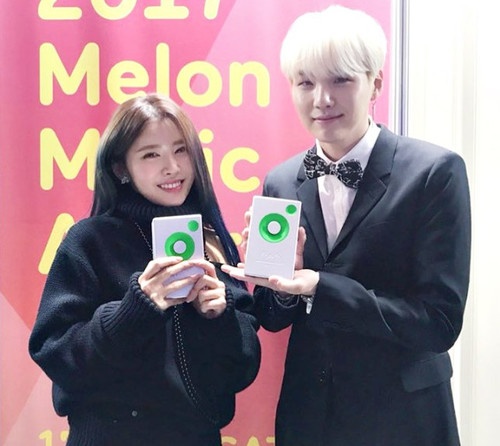
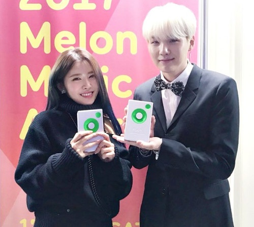

Yoongi Min
My name is Yoongi Min, I was born on March 9, 1993 in North Gyeongsang Province, South Korea in a city called Daegu. Growing up I attended Gwaneum Middle School, and Apgujeong High School. All in which I found a passion for music through the many people I admired such as Epik High and Stony Skunk. Because of them I decided to pursue music in my later years of life as a rapper, song writer, and record producer. Although I was at first not supported by my parents, I was lucky enough to be pushed to follow my passion by my older brother.
Originally I had applied to Big Hit Entertainment under the idea of becoming a music producer for the agency however at the age of 17 I joined the group BTS after three years of training in which I was able to freely experiment with music and music production. Through my seven years within the group, I have been accredited with as many as 120 songs by the Korea Music Copyright Association, this includes BTS’s discography and other artists outside my company.
In 2016 I released my self titled mixtape, “Agust-D” on SoundCloud and according to Fuse TV it was rated one of the top mixtapes. Within that mixtape, I talked about my personal struggles in hopes it would be able to connect to more people. As I entered my mid-20’s I decided to attend Global Cyber University in Korea and decided to major in Broadcasting and Performing Arts to better support my career and music productions. As of 2018, I was promoted to a full member of the Korea Music Copyright Association. That same year, I was awarded the fifth-class Hwagwan Order of Cultural Merit as a member of BTS. On May 22, 2020, I released my second ever mixtape, D-2; it charted number 11 on the Billboard 200.
Experience
Producer
• Produced, composed, and wrote over 120 songs to my name
• Apart of and Ambassador of the UNICEF "Love Myself" Campaign
• Won "Best Producer of the Year" award at Melon Music Awards
Rapper
• Responsible of being lead Rapper within group
• 2nd eldest member, incharge of keeping peace
Education
Global Cyber University
Apgujeong High School
Portfolio


